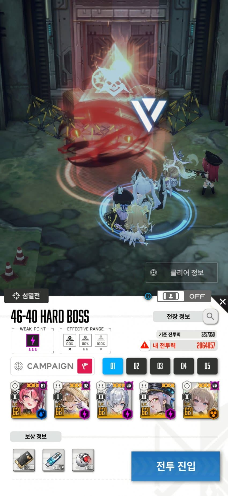
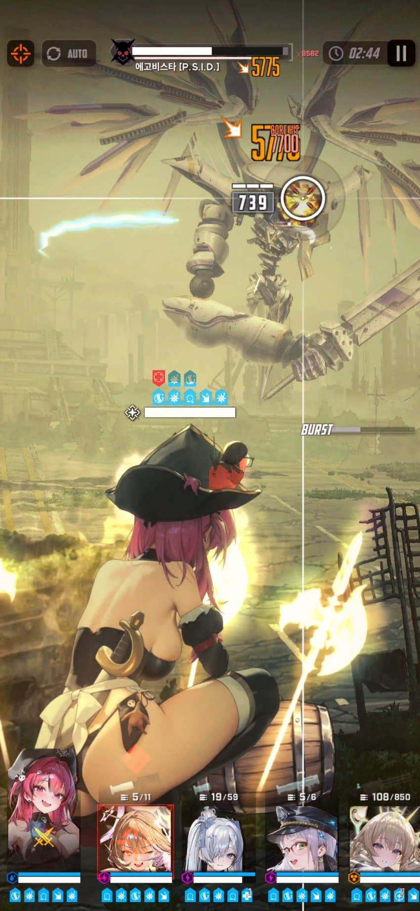
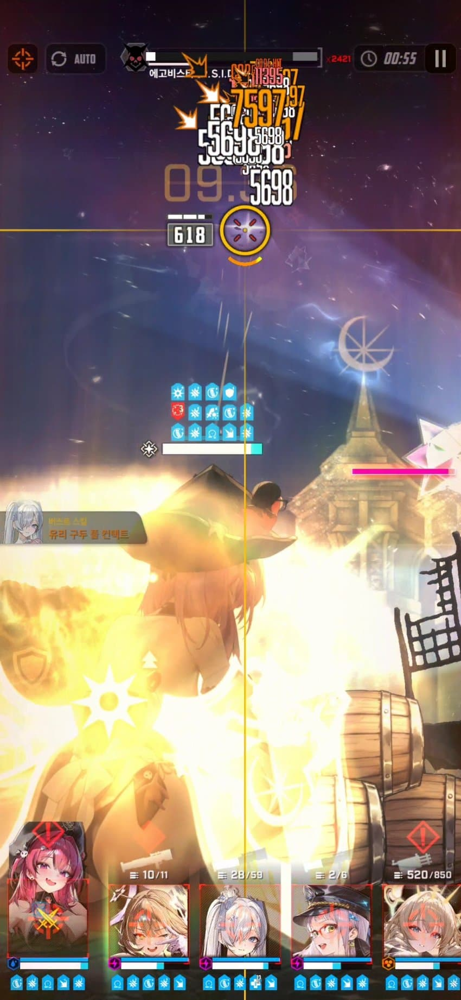
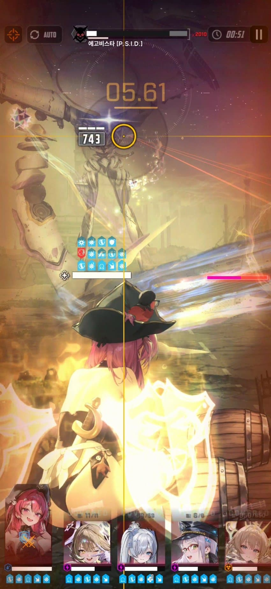

주년솔레만 PC방가서 치는 모바일 니붕이입니다.
싱크621 넘겨서 오늘 하드 앨트에 이어 하드 에고를 잡았슴.
나처럼 모바일로 고생하는 니붕이들을 위해 써봄.
모바일로 플레이할 때 타점이 에고비스타를 따라간다던지, 버충을 신경쓴다던지, 하다못해 엄폐 하는 것도 참 힘든 부분이 많음...
그래서 본 영상을 보면 알겠지만 사실상 풀오토에 고드름이랑 즉사급패턴 부분만 엄폐해주고 나머진 거의 그대로 놔둠.
특히 에고비스타같이 현란한 보스들은 오히려 오토가 나보다 훌륭한 것 같삼.
에고비스타 격파에서 가장 중요한건 2개가 있음.
1. 맞으면 골로가는 고드름

아니스에 빨간불이 들어와있는게 보임
고드름을 아니스를 향해 날린다는 소리이므로 곧장 아니스로 교체 후 엄폐(자동사격 끄기)해주셈.
이때 하나라도 타이밍 어긋나서 엄폐물 까이면 후반 패턴때 즉사하니까 조금이라도 엄폐물 까이면 리트하기
고드름은 빨간불뜨고 곧장 날아와 꽂히니까 딜 더 넣어보려고 늦게 엄폐하지마삼 그리고 날아오기전에 미리 엄폐하면 태보판정 못받고 그대로 엄폐물 작살나니까 유의하기
이거말고 3번자리한테만 쏘는건 신데렐라가 다 받아주니 괜찮고 맞으면 기절 걸리는 미사일은 속도가 느려서 영상처럼 편하게 부숴주삼
2. 55초경에 휘두르고 내려찍는 패턴

이걸 위해 지금껏 엄폐물이 조금이라도 안까이게 리트한거임
풀엄폐물체력+크라운 보호막을 가진 상태로 엄폐를 해줘야

이렇게 전원 생존함
이후에는 계속 딜타임 잡아주면 되는데 영상 보면 알겠지만 막저지 실패해서 못깰뻔했음
근데 저지 실패해도 생각보다 즉사전까지 시간 있으니까 딜 우겨넣어보고 아니면 걍 저지하삼
모바일 유저 모두 화이팅임..